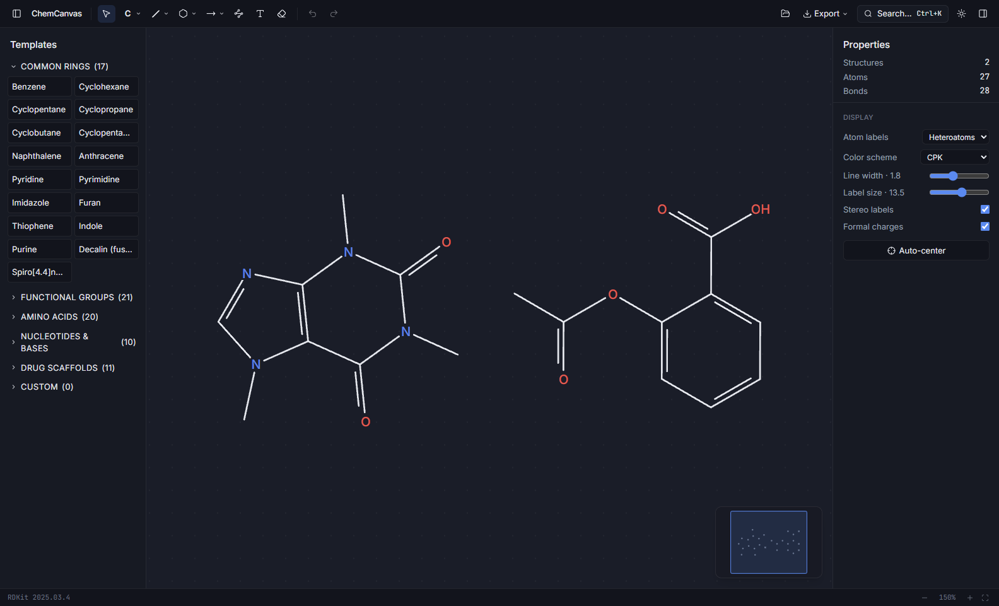
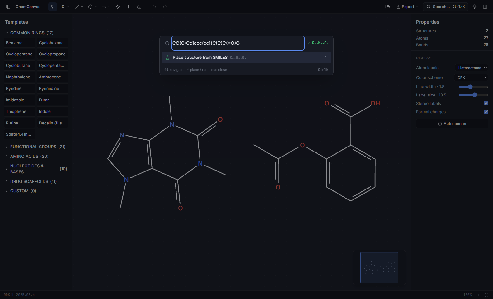
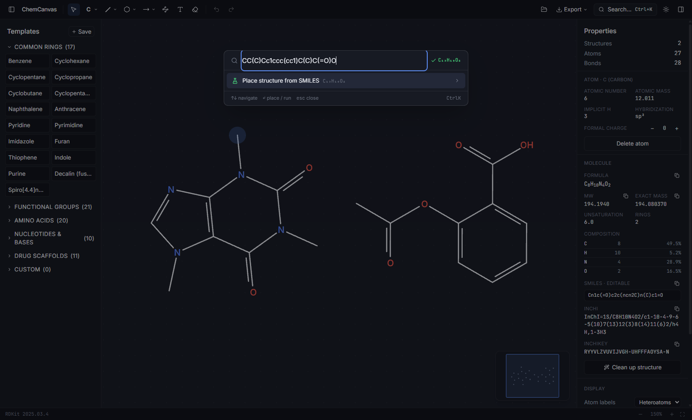

ChemCanvas turns "caffeine" into an editable structure the moment you press Enter. Bonds snap to real geometry, formulas update while you draw, and every drawing stays on your computer.

Search
The search bar checks PubChem for common names and falls back to OPSIN when you hand it strict IUPAC nomenclature. Paste a SMILES string and it validates while you type, showing the formula before you commit. Whatever you searched for lands on the canvas as a normal, editable drawing rather than a flat picture.
Ctrl + K, from anywhere in the app.

Drawing
Bonds snap to thirty-degree angles at standard length. Click an atom and the next bond grows into the most open direction, so chains zig-zag the way they do on paper. Drop a benzene ring onto an existing bond and the two fuse into naphthalene. Give a nitrogen one bond too many and a small amber dot appears; hover it and it tells you what went wrong. Nothing blocks you, nothing pops up.
Hold Alt to draw free-angle. G toggles grid snap.
Properties
Formula, molecular weight, exact mass, SMILES, InChI, InChIKey. All of it comes from RDKit, the open-source chemistry engine used across drug discovery, and all of it updates the moment your drawing changes. Select a single atom and the panel shows its charge, isotope, hybridization, and chirality instead.
Edit the SMILES field directly and the drawing re-renders.

In the box
Forward, equilibrium, retrosynthetic, resonance, and curly electron-pushing arrows, with conditions text above and below. One command lines up reactants, arrow, and products.
Wedge, dash, and wavy bonds. R/S and E/Z labels appear on their own and follow every edit. A Newman projection is one right-click away.
Rings, functional groups, all twenty amino acids, nucleotide bases, and common drug scaffolds. Save your own fragments and reuse them later.
Every step is kept. A panel lists them all, and clicking an entry jumps the document straight back to that point.
Opens MOL, SDF, SMILES, and RXN. Exports the same, plus PNG up to 600 dpi, SVG, and PDF for anything headed to print.
Drawings autosave to your machine and reopen where you left off. The only network requests are name lookups, and only when you ask for one.
Download
Windows may show a SmartScreen notice on first launch, since the installer is not code-signed. Choose "More info", then "Run anyway". It installs for the current user and needs no admin rights. No telemetry, no account, and drawings never leave your computer — the full details are in the privacy policy, which downloading means you agree to.
Developer
I'm Mauricio, a student researcher at the Illinois Mathematics and Science Academy. Most of my time outside class goes to chemistry. With the help of IMSA's Student Inquiry and Research program I worked on medicinal chemistry aimed at leishmaniasis, a neglected parasitic disease spreading across countries like Brazil where I'm from, and sent my research to DNDi's Open Synthesis Network. Before that I spent six months on rocket propulsion chemistry, which would've been a lot easier if I had a software like this one.
I built ChemCanvas because the structure editors I kept being handed felt older than I am. I wanted the drawing part of chemistry to be quick: type a name, get the molecule, fix the geometry with one shortcut, export something a journal would accept. No license server, no watermark, and no toolbars from twenty years ago.
Privacy
The short version: no data is collected, by this website or by the software. There is nothing to opt out of because nothing is gathered in the first place.
If this policy ever changes, the new text will appear on this page with a new date. Questions can reach me through the LinkedIn profile above.
Effective July 17, 2026 · applies to ChemCanvas 1.0.0 and this website
ChemCanvas collects no data. In plain terms:
The full text is in the privacy policy. Downloading means you agree to it.